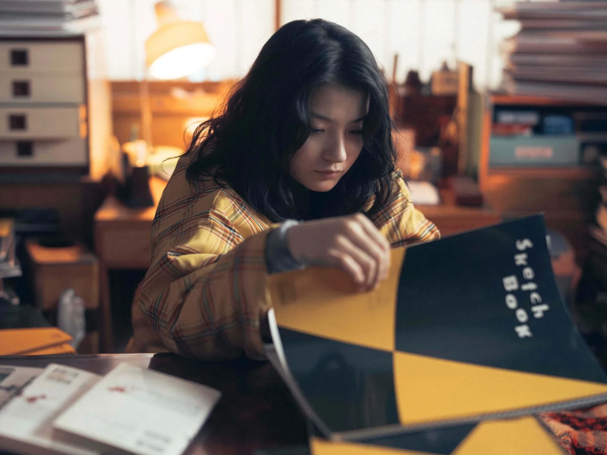
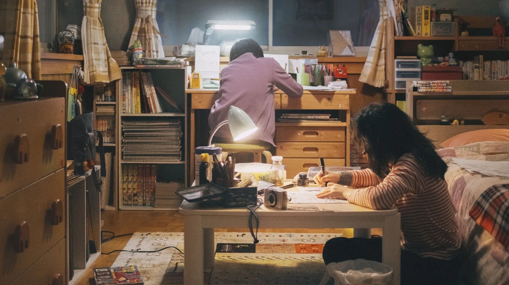

만화를 그리는 데 모든 것을 거는 초등학교 4학년 후지노가 있다. 어느 날 학년 신문에 실린 그림 한 장이 그를 흔든다. 학교에 나오지 않는 같은 반 아이 교모토가 그린 그림이다. 만화로 이어진 두 사람은 함께 작품을 그리기 시작한다. 고레에다 히로카즈 감독의 실사 영화 「룩백」은 이 이야기를 따라간다. 일본에서는 9월 11일에 개봉했고, 국내에서는 10월 8일 극장에 걸렸다.
143쪽짜리 단편에서 시작했다
원작은 「체인소 맨」의 작가 후지모토 타츠키가 그린 단편이다. 2021년 7월 19일 「소년 점프+」에 143쪽 분량으로 실렸다. 공개 첫날 조회 수가 250만 회를 넘었고, 「이 만화가 대단하다! 2022」 남성편 1위에 올랐다. 2024년에는 오시야마 기요타카 감독이 1시간 남짓한 극장판 애니메이션으로 옮겼다. 일본에서 개봉관 119곳으로 시작한 이 애니메이션은 입소문을 타고 20억 엔 넘게 벌었다.
고레에다는 이 만화를 영화로 만들 생각으로 읽지 않았다. 부산국제영화제 기자회견에서 그는 서점에서 우연히 집어 들었고, 그때 받은 충격을 잊을 수 없다고 말했다. 그는 이 이야기를 창작하는 사람이 짊어지는 업의 이야기로 읽었다. 그리고 자신에게도 '왜 영화를 만드는가'라는 질문이 돌아왔다고 했다.
왜 필름이었나
고레에다는 기획 첫 단계에서 두 가지를 프로듀서에게 제안했다. 35mm 필름으로 찍을 것, 그리고 사계절을 담을 것. 필름을 고집한 이유는 이렇게 설명했다. "이 순간, 여기서 벌어지고 있는 순간에 의식을 집중할 수 있기 때문이다." 필름은 다시 찍을 기회가 적고, 나중에 고칠 여지도 디지털보다 좁다. 배우들은 그만큼 긴장한다. 그는 그 긴장이 현장에서 작용해 관객에게 전해진다고 믿는다고 했다.
촬영은 아키타현 니카호시를 중심으로 일 년 가까이 이어졌다. 2025년 2월부터 5월까지 겨울과 봄을, 7월에 여름을, 11월에 가을을 찍었다. 카메라는 고레에다와 장편 영화에서는 처음 손을 맞춘 우에노 센조가 잡았다.
500T 와 250D
코닥 일본은 이 영화를 「SHOT ON KODAK」으로 소개하며 쓴 필름을 「KODAK 35mm 500T / 250D」로 적었다. 둘은 성격이 다르다. 비전3 250D 는 햇빛(약 5500K)에 맞춘 데이라이트 필름으로, 입자가 곱고 맑다. 비전3 500T 는 텅스텐 조명(약 3200K)에 맞춘 고감도 필름이다. 장면마다 어느 필름을 썼는지는 아직 공개되지 않았다.
두 필름은 스틸 사진가에게도 낯설지 않다. 영화용 원판을 35mm 카트리지에 다시 감아 파는 제품이 있어서 일반 필름 카메라로도 찍을 수 있다. 원래는 ECN-2 현상을 하는 필름이고, 뒷면에 렘젯 층이 있는 원판은 현상 전에 이 층을 벗겨야 한다. 5ft.mag 필름 카탈로그에도 Kodak Vision3 500T 와 Vision3 250D 가 있다.
현장을 따라간 사진가
영화의 장면 사진은 사진가 하마다 히데아키가 찍었다. 그는 약 3개월 동안 촬영 현장에 붙어 지내며 후지노와 교모토의 일상을 기록했고, 그중 8장이 7월에 공개됐다. 두 사람이 처음 만나는 장면, 「소년 점프」를 손에 들고 눈길을 걷는 두 사람, 노란색과 짙은 초록색 스케치북을 내려다보는 교모토가 들어 있다. 니카호의 사계절을 담은 메이킹 사진 7장도 따로 나왔다. 두 아들을 11년 동안 찍은 그의 평소 작업은 하마다 히데아키 기사에 따로 정리했다.


배우와 상영
후지노는 데구치 나츠키가, 교모토는 마키타 아쥬가 연기했다. 두 사람의 어린 시절은 나나세 후리와 오카다 로카가 맡았다. 영화는 제83회 베네치아국제영화제 경쟁 부문에서 처음 상영됐고, 토론토국제영화제 스페셜 프레젠테이션 부문에도 초청됐다. 국내에서는 제31회 부산국제영화제 갈라 프레젠테이션으로 먼저 관객을 만났다.
애니메이션이 원작의 선을 따라갔다면, 실사 영화는 필름 위에 남은 빛을 따라간다. 같은 이야기를 한 번 더 보게 될 관객이라면 무엇이 달라 보일까? 극장에서 35mm 필름의 겨울과 여름을 확인해 볼 일이다.
영화 정보
- 제목 룩백(ルックバック, Look Back), 2026
- 감독 고레에다 히로카즈
- 원작 후지모토 타츠키 「룩백」(소년 점프+, 2021)
- 촬영 우에노 센조 · 필름 KODAK 35mm 500T, 250D
- 장면 사진 하마다 히데아키
- 출연 데구치 나츠키, 마키타 아쥬, 나나세 후리, 오카다 로카
- 개봉 일본 2026년 9월 11일, 한국 2026년 10월 8일(배급 메가박스중앙)